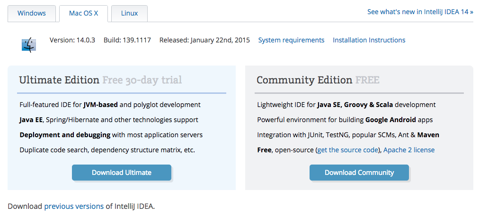

Installing IntelliJ
Windows System Requirements
- Microsoft Windows 8/7/Vista/2003/XP
- 300 MB hard disk space and 1 G for caches
- minimum of 1 GB RAM, 2 GB RAM recommended
Mac System Requirements
- Mac OS X 10.5 or higher, up to 10.9 (Mavericks)
- 1 GB RAM minimum, 2 GB RAM recommended
- 300 MB hard disk space + at least 1 GB for caches
- 1024x768 minimum screen resolution
Download JDK 1.6
The Java Development Kit (JDK) needs to be downloaded first, so go to http://www.oracle.com/technetwork/articles/javase/index-jsp-138363.html and download it before downloading IntelliJ.
Download and Install IntelliJ
Download IntelliJ from https://www.jetbrains.com/idea/download/. Choose the Community Edition to download.

Installation Instructions
- Save the file into preferred folder and execute file ideaIC-(version).exe (Windows) or idealC-(version).dmg (Mac).
- On Mac, drag the app to the applications folder.
- If asked to run file, click run.
- You will then be guided through a basic setup. File associations and desktop icons are a matter of preference.
- When running IntelliJ for the first time, point the IntelliJ IDE to the JDK that you downloaded previously.